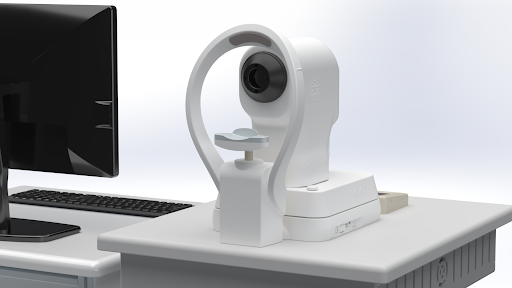

Pushing the bounds of
ocular imaging.
We deliver visible-light optical coherence tomography technology, which offers the highest spatial resolution and imaging contrast in the market for clinical and preclinical use.


Axial Resolution
1.3 μm
Unprecedented clarity in tissue imaging, nearly 3x higher than current state-of-the-art clinical OCTs.
Scanning Angle
56°
Wide-field coverage extending to the pupil pivotal point for comprehensive retinal diagnostics.
A-Line Rate
125 KHz
Ultra-fast acquisition speeds powered by our flagship Blizzard spectrometer for rapid alignment.
Our Products
We Develop Imaging Tools
Our tools aide top specialists in human clinical research, small animal ophthalmic research, metrology, and high performance spectrometry.
Put simply, our experts can fulfill your imaging needs.
